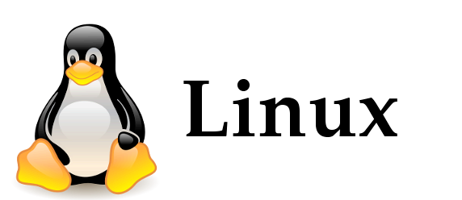

Linus Torvalds는 누구인가?
? 리누스 베네딕트 토르발스(Linus Benedict Torvalds , 1969년 12월 28일 ~)는 핀란드 헬싱키에서 태어난 스웨덴계 핀란드인으로서 소프트웨어 개발자이자 리눅스 커널과 깃을 최초로 개발한 사람으로 잘 알려져 있다. 후에 그는 리눅스 커널 개발 최고 설계자가 되었고, 현재 프로젝트 코디네이터로 활동하고 있다. 그는 커널의 플랫폼 독립적인 부분과 인텔 IA-32 아키텍처로 구체화되는 핵심 커널의 컴포넌트들을 관리한다. 저명한 오픈소스 소프트웨어 개발리더들에게 부여되는 명예 타이틀직인BDFL( Benevolent Dictator for Life) 중의 한 사람이기도 하다.
Linus Torvalds가 만든 Linux
리눅스는1989년 핀란드 헬싱키대학에 재학중이던 리누스 토르발스(Linus Torvalds)가 유닉스를 기반으로 개발한 공개용 오퍼레이팅시스템(OS) (오픈소스 운영체제) 이다.
리누스 토발즈가 당초 공개한 리눅스 커널(kernel, 핵심 구성 요소)의 첫 번째 버전(0.01)은 약 1만행 정도의 소스 코드로 구성되었다. 하지만 이를 보고 흥미를 느낀 개발자들이 하나 둘
이 프로젝트에 참가해 힘을 보태기 시작했고 리눅스는 성능과 기능이 급격히 향상되기 시작했다. 불과 1년 후에 출시된 버전 0.96의 소스 코드는 4만행 정도로 덩치가 커졌다
(참고로 2012년을 즈음해 리눅스 커널의 소스 코드는 1,500만 행을 돌파했다).
리눅스는 특히 소프트웨어의 소스 코드를 무료로 공개하는 오픈 소스(open source) 확산 운동을 주도하던 리처드 스톨먼(Richard Matthew Stallman)이
설립한 자유소프트웨어재단(FSF, Free Software Foundation)의 주목을 받았다. 그리고 리눅스는 그들이 추진하는 GNU(GNU's Not Unix)
프로젝트의 핵심 중 하나로 부상하게 된다. 이로 인해 전세계 개발자들이 자유롭게 리눅스의 개발에 참여할 수 있는 토대가 마련되었고, 1994년 3월,
마침내 첫 번째 완성 버전인 리눅스 커널 1.0.0이 공개되었다. 이후에도 리눅스 커널은 여전히 무료 공개 원칙을 유지하고 있으며,
이를 변형시키고 재배포 하는 것도 자유롭다는 점 역시 변함이 없다.
파일구성이나 시스템기능의 일부는 유닉스를 기반으로 하면서, 핵심 커널 부분은 유닉스와 다르게 작성되어 있다.
인터넷 프로토콜인 TCP/IP를 강력하게 지원하는 등 네트워킹에 특히 강점을 지니고 있으며, 유닉스와 거의 유사한 환경을 제공하면서 무료라는 장점 때문에
프로그램 개발자 및 학교 등을 중심으로 급속히 사용이 확대되고 있다. 리눅스는 각종 주변기기에 따라 혹은 사용하는 시스템의 특성에 맞게 소스를 변경할 수 있으므로
다양한 변종이 출현하고 있다.
 align="center">
턱스(Tux)라는 이름의 펭귄은 1996년 래리 유윙이 창조한 리눅스의 마스코트이다.
Linus Torvalds의 행보
리눅스는 IT 세계 전반에 강력한 힘을 발휘하게 되었지만, 정작 리눅스의 아버지라고 할 수 있는 리누스 토발즈가 이를 통해 막대한 경제적 이득을 거두지는 않았다.
리눅스가 유명세를 얻게 된 이후에도 리누스 토발즈는 이를 상업적 목적으로 이용하지 않았기 때문이다. 1996년에 대학을 졸업한
그는 이후 미국의 반도체 회사인 트랜스메타(Transmeta)에 취업, 1997년부터 2003년까지 개발자로 일하며 생계를 유지했다.
미국에서 Linux라는 상표권을 취득해 보유하고 있는 것도 리누스 토발즈 자신이지만, 정작 그 자신은 이를 상업적으로 이용한 적이 없다.
단지 다른 사람이 리눅스의 상표권을 멋대로 취득해 부당한 이득을 얻는 것을 막기 위한 조치라고 밝힌 바 있다.
이후 그는 리눅스 재단의 산하에서 리눅스의 개발 및 표준 규정을 주도하는 단체인 OSDL(Open Source Development Labs,
오픈 소스 개발 연구소)로 자리를 옮겼다. 그리고 특이하게도 여전히 그는 경영자나 고문이 아닌 소프트웨어 개발자(Software engineer)로 분류된다.